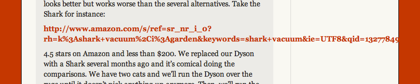
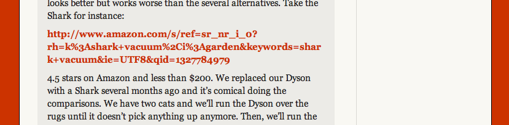

Prevent Long URL’s From Breaking Out of Container
Or any long bit of text, really.

.comment-text {
word-wrap: break-word;
}
A more robust browser support, you'll need more (via):
-ms-word-break: break-all;
word-break: break-all;
// Non standard for webkit
word-break: break-word;
-webkit-hyphens: auto;
-moz-hyphens: auto;
hyphens: auto;The above works in Internet Explorer 8+, Firefox 6+, iOS 4.2, Safari 5.1+ and Chrome 13+.